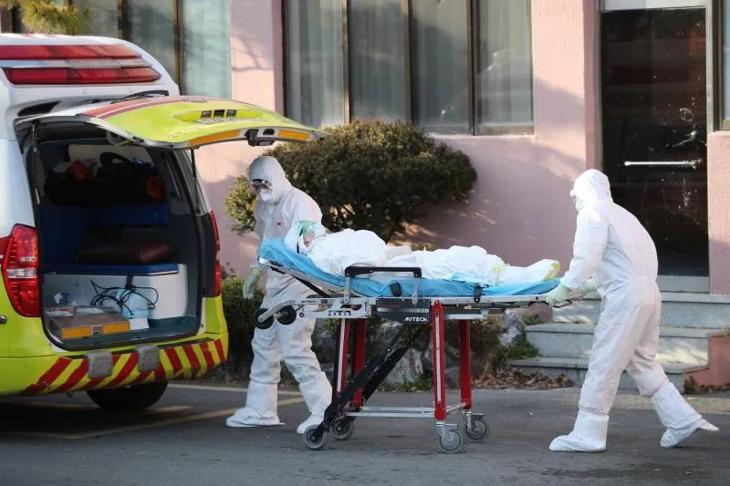
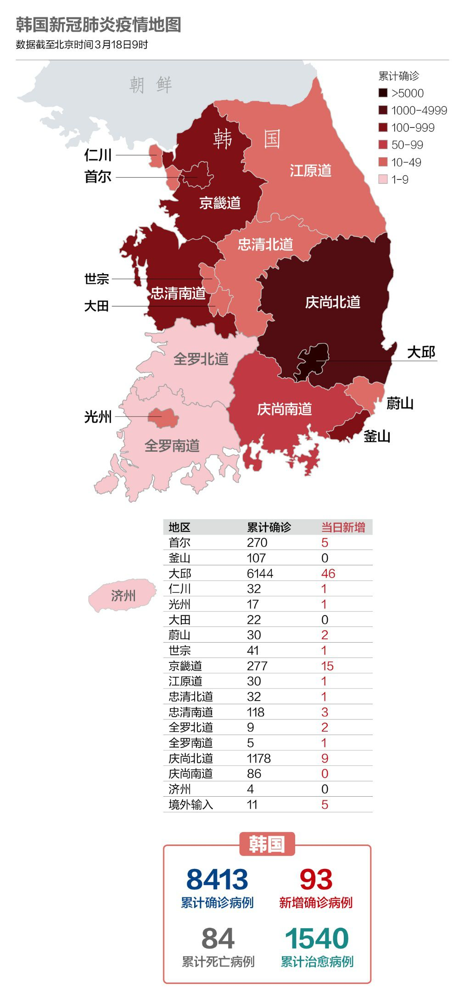
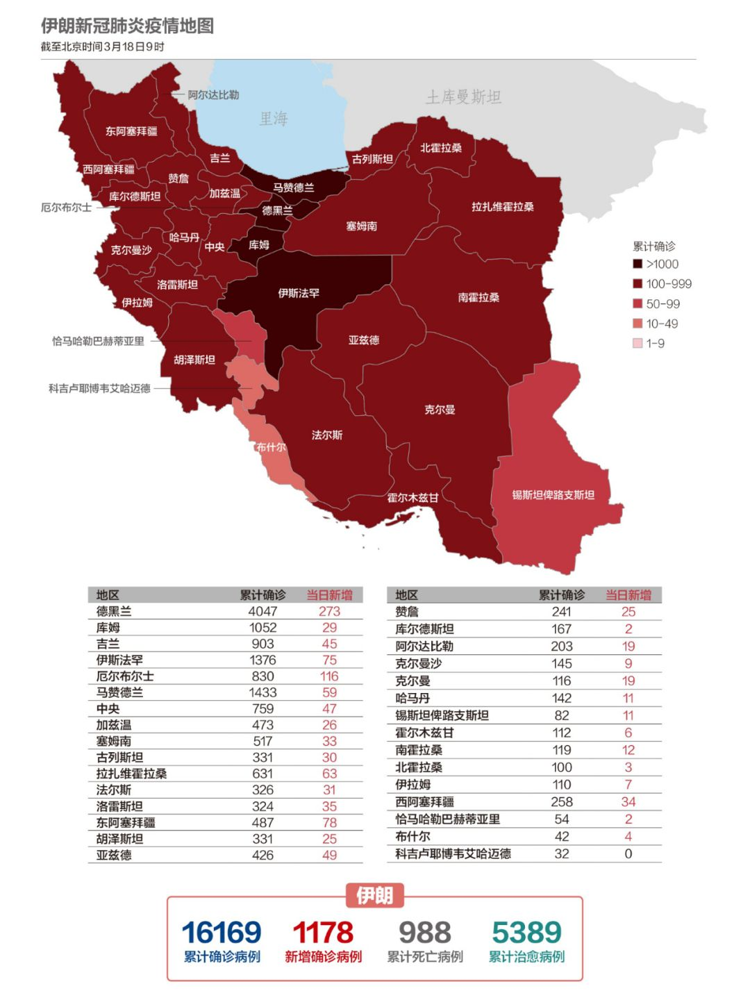

美欧加速撒钱抗疫
原文链接 备份链接 从股市的表现来看，市场更倾向于认同用短期的不便和经济痛苦来换取对病毒的控制 文 |《财经》特派记者 金焱 发自华盛顿 编辑 | 苏琦 新冠肺炎疫情持续肆虐，美国和欧洲为应对疫情影响经济，纷纷出台各种刺激救助政策，试图 …

湖北现有疑似清零。多省发现回国人员中存在无症状感染者，“外防输入”形势仍然较为严峻。美国新增迅速逼近2000例。美、韩均计划直接向民众发放现金以度过困难时期

文 |《财经》数据研究员 徐进
图 |《财经》视觉中心 编辑 | 郝洲
一、国内新增仅1例，现多起“无症状”输入病例
图1

今日国内简述：国内3月17日报告累计确诊病例80894例，武汉新增1例。湖北现有疑似病例清零。新增报告境外输入确诊病例12例（广东5例，北京3例，上海3例，四川1例）。山东、四川、云南、贵州多省均发现回国人员中存在无症状感染者，“外防输入”形势仍然较为严峻。
二、世卫组织呼吁各国采取“最大胆的行动”
图2

海外新增病例进一步扩大，达到15721例。紧随意大利之后，德国、西班牙、美国新增均在2000例左右。世界卫生组织欧洲区域办事处主任汉斯·克鲁格在记者会上说：“每个国家，无一例外，都需要采取最大胆的行动，以阻止或减缓（新冠）病毒的威胁。”
俄罗斯政府决定从3月18日至5月1日禁止所有外国公民和无国籍人士入境。
图3

美国这艘“航天飞机”似乎终于注满燃料了，自疫情以来，单日增幅首次破千，并迅速向2000迈进。德国也在预料之中走上了快车道。
三、全美50个州和华盛顿哥伦比亚特区全部“中招”
图4

美国出现了自疫情以来最大增幅，单日新增确诊病例 1764例，累计确诊病例达到6461例，较前一日增长37.6%。美国西维吉尼亚州首次发现确诊病例。至此，全美50个州和华盛顿哥伦比亚特区全部“中招”。
当地时间3月17日，美国政府宣布将推出一揽子经济刺激计划，以缓解疫情对市场和经济的冲击，该计划的总价值可能在1万亿美元左右，这是有史以来规模最大的联邦紧急财政计划之一。同时，美国政府有意在两周内向美国人发放支票，每人将得到1000美元的补贴。
四、欧洲多国跟进封锁，意大利万名医学毕业生提前毕业
图5

英国首相鲍里斯·约翰逊和财政大臣瑞希·苏纳克3月17日下午联合出席发布会。对于扶持危机中的中小企业，英国政府推将出一系列紧急的救助计划，包括拨款3300亿英镑用来满足企业的信贷资金需求。英国政府首席科学顾问帕特里克·瓦伦斯承认，英国目前尚未对全部感染者进行病毒检测，只能对症状严重的感染者优先检测。在世卫组织发出警示和提醒后，英国决定加大检测力度。瓦伦斯希望，通过积极医疗干预，英国的死亡病患总数可能会在2万人以内。
从当地时间3月17日开始，瑞士全境进入“紧急状态”，除基础服务设施外，其余公共场所和设施一律停业。
挪威政府决定将没有居留权的人驱逐出境，以减少新冠肺炎的传播感染。
爱尔兰全国已经建起19个专门的新冠病毒检测中心，接受检测的人员可以进行不下车病毒感染检测。
卢森堡首相3月17日宣布该国进入为期3个月的紧急状态，这在卢森堡历史上尚属首次。
图6

为了帮助卫生服务部门应对新型冠状病毒疫情，意大利大学部长加埃塔诺·曼弗雷迪称，政府将让今年的医学院毕业生提前八至九个月开始工作，并免除他们获得从业资格前的强制考试。“这意味着立即向国家卫生系统输送约1万名医生，对于缓解我国正在遭受的医生短缺情况至关重要。”
五、韩国治愈率18.3%，连续4日新增两位数以内
图7

截至3月18日，韩国新冠肺炎患者中1540例已治愈并解除隔离，治愈率达18.3%。
为进一步防控新冠疫情，韩国国会17日深夜通过了规模达11.7万亿韩元（约合人民币663.3405亿元）的追加预算案。具体来看，该预算案为疫情重点地区大邱市和庆尚北道编制1.0394万亿韩元；为个体工商户增编1.1638万亿韩元的预算；为应对疫情增编1483亿韩元，为稳定民生增编7696亿韩元；为低成本航空公司等受到疫情冲击的行业增编2418亿韩元。
韩国首尔市为因新冠肺炎而直接受到打击的市民提供”灾难紧急生活费”。对117.7万户中低收入家庭给予补贴，每户补贴30万-50万韩元。首尔市市长朴元淳表示:“这是为了克服国家危机,搞活地区经济的举措。”
六、伊朗关闭两处什叶派圣地，释放8.5万名囚犯
图8

伊朗什叶派圣城马什哈德和库姆则破天荒关闭了两处圣地，引发民众激烈抗议。除了关闭宗教场所，伊朗卫生部官员已多次呼吁民众留在家中，不要随意出门，警告“现在为准备新年出门采购相当于自杀”。但很多民众依然无视警告，各地的商场和餐馆依然照常营业。
为防止疫情进一步扩散，伊朗司法部于3月17日再度宣布释放包括政治犯在内的8.5万名囚犯。
【特别说明：以上统计，2月28日前为世卫组织官方统计数据，数据截止时间为北京时间每日17时；从2月28日开始，数据由《财经》根据公开资料统计，截止时间为北京时间每日9时】
七、全球疫情数字速览：
1、【20亿美元研发疫苗】流行病防范创新联盟CEO理查德·哈切特估算，要足够快地开发出新冠肺炎疫苗，需要在未来12到18个月内花费20亿美元。
2、【100万人失业】美国白宫经济顾问委员会前主席哈塞特（Kevin Hassett）接受媒体采访时称，在疫情影响下，出现全球经济衰退的可能性接近100%。美国3月最多可能有100万人失业。美国此前最大的失业危机发生在2009年3月，一个月内失业人数高达80万人。
小结：湖北现有疑似清零。多省发现回国人员中存在无症状感染者，“外防输入”形势仍然较为严峻。美国新增迅速逼近2000例。美、韩均计划直接向民众发放现金以度过困难时期。意大利让万名医学生提前毕业，加入抗疫大军。

▲点击图片查看更多疫情报道
责编 | 蒋丽 lijiang@caijing.com.cn
本文为《财经》杂志原创文章，未经授权不得转载或建立镜像。如需转载，请在文末留言申请并获取授权。
原文链接 备份链接 从股市的表现来看，市场更倾向于认同用短期的不便和经济痛苦来换取对病毒的控制 文 |《财经》特派记者 金焱 发自华盛顿 编辑 | 苏琦 新冠肺炎疫情持续肆虐，美国和欧洲为应对疫情影响经济，纷纷出台各种刺激救助政策，试图 …
原文链接 备份链接 “外防输入”已是当前疫情防控重中之重。海外累计确诊病例超过10万，世卫组织呼吁各国扩大监测范围。欧洲更多国家关闭边境 文 |《财经》数据研究员 徐进 图 |《财经》视觉中心 编辑 |** 郝洲** 一、北京重启小汤山 …
原文链接 备份链接 国内31个省区市新增确诊降至两位数；全球累计确诊病例已破10万大关；意大利疫情最严重地区医疗资源已消耗殆尽 文 |《财经》数据研究员徐进 图 |《财经》视觉中心 编辑 | 郝洲 一、国内疫情防控形势继续向好，局面尽在 …
原文链接 备份链接 国内单日新增病例有望很快落到两位数，全国治愈率跨过60%节点。新冠疫情在海外大部分国家和地区（包括美国）还处于暴发的早期阶段。 文 |《财经》数据研究员徐进 图 |《财经》视觉中心 编辑 | 郝洲 一、 国内多地迎来 …
原文链接 备份链接 无症状感染者在入关后，辗转回到目的省份仍未病发，但被及时发现核酸检测结果为阳性，目前这一群体的比例小，发现后及时隔离、治疗，排查密切接触者，不足以影响城市复工计划 文 | 《财经》 …